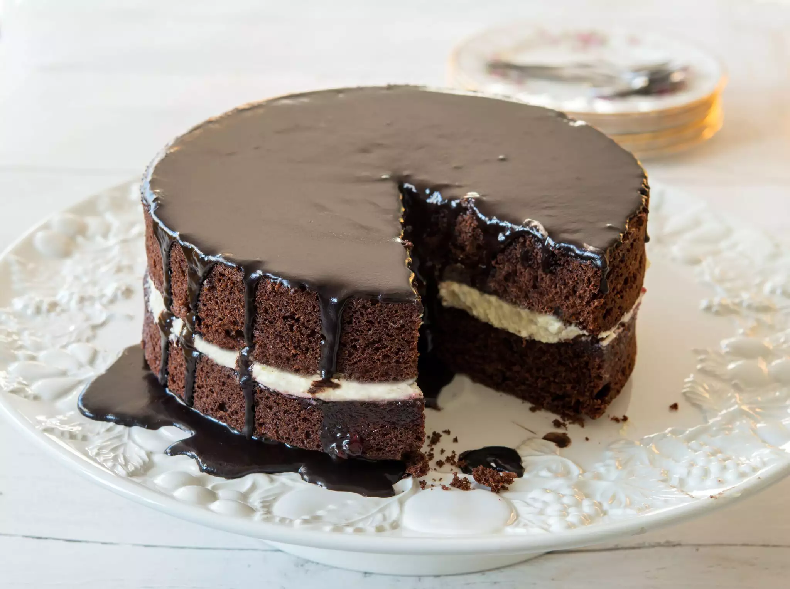

Cake-ing!
The term "cake" has a long history. The word itself is of Viking origin, from the Old Norse word "kaka". Early cakes in England were also essentially bread. Sponge cakes, leavened with beaten eggs, originated during the Renaissance, possibly in Spain. At Cake, we hope to share with you different ways of making and baking these items, so you can do it yourself at home... or just order it from the professionals!
